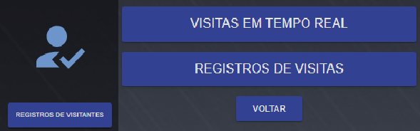

Consultar Usuários

Lista de usuários cadastrados, indicando nome, e-mail e empresa/departamento relacionado. Possibilita excluir ou editar um usuário de acesso.
Consulta de Funcionário
Possibilita a consulta de cadastrados de funcionários, podendo visualizar, editar e excluir o usuário.
Consulta de visitantes
Possibilita a consulta de cadastros de visitantes, podendo visualizar, editar e excluir o usuário. Aqui, também é possível fazer novamente o download do QR Code atribuído ao visitante.
Registro de visitantes

Visitantes em tempo real
Nesta aba serão listados todos os visitantes que estão atualmente dentro do estabelecimento. Função pode ser utilizada para noção de ocupação ou para visualizar se algum visitante ainda não realizou a saída em uma eventual situação de emergência por exemplo.
Registro de visitantes
No menu registro de visitantes é possível visualizar além dos visitantes que ainda estão presentes, também os visitantes que já realizaram a saída do estabelecimento. Possibilitando a consulta de em qual momento a visita foi finalizada.
Consulta
Menu onde todos os históricos de acesso ficam disponíveis para consulta. Aqui será informado quais usuários realizaram o acesso, em qual momento e por qual porta de acesso, além de informações como uso de máscara, temperatura corporal no momento do acesso (caso a controladora utilizada tenha esta função) e cartão utilizado para acesso. Permite filtrar por eventos de entrada e saída, e por período de acesso. Também possibilita da exportação dos dados em formato .csv.